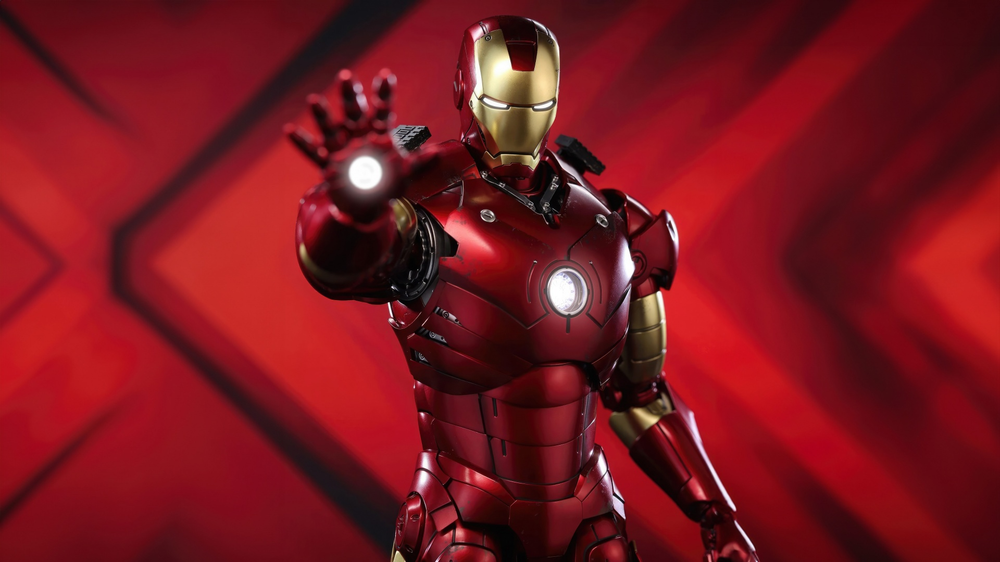
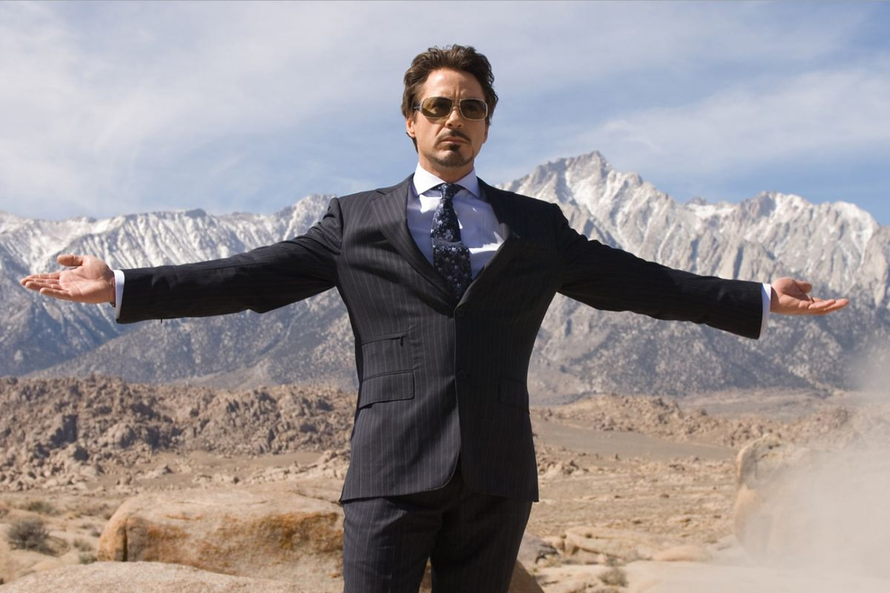
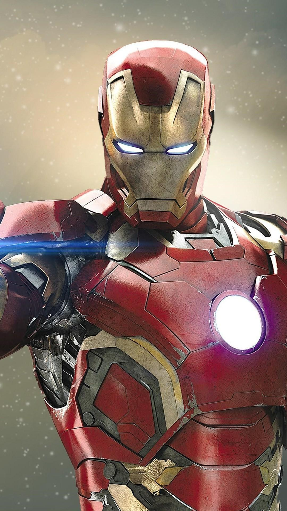
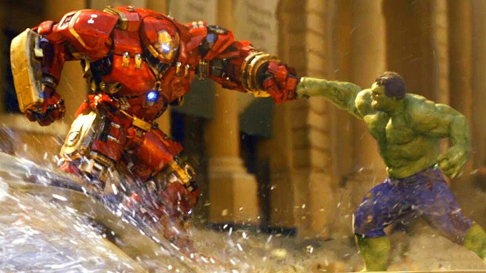
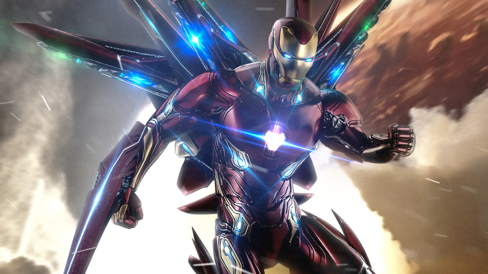
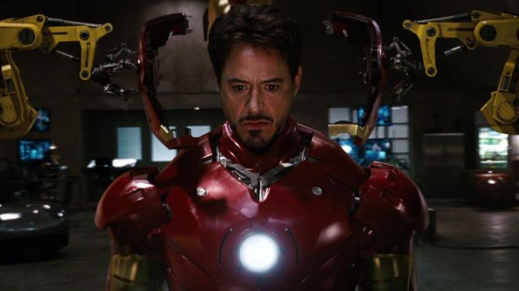

Historia
Iron Man, antes también conocido como El Hombre de Hierro en español,es un superhéroe que aparece en los cómics estadounidenses publicados por Marvel Comics. El personaje fue creado por el escritor y editor Stan Lee en colaboración con el guionista Larry Lieber.Los artistas on Heck y Jack Kirby fueron los encargados de su diseño. Este superhéroe hizo su primera aparición en Tales of Suspense #39 (marzo de 1963) y recibió su propio título en Iron Man #1, en mayo de 1968. En 1963, el personaje fundó el equipo de superhéroes Los Vengadores con Thor, Ant-Man, Avispa y Hulk. Las historias de Iron Man, individualmente y con los Vengadores, se han publicado de manera constante desde la creación del personaje.
 
Iron Man es el personaje de superhéroe de Anthony Edward "Tony" Stark, un multimillonario magnate empresarial, filántropo estadounidense, playboy y un ingenioso científico e ingeniero, que dirige la empresa de fabricación de armas Industrias Stark. Cuando Stark fue capturado en una zona de guerra y sufrió una herida grave en el corazón, construyó su armadura de Iron Man y escapó de sus captores. Las armaduras de Iron Man le otorgan fuerza sobrehumana, vuelo, proyección de energía y otras habilidades. El personaje fue creado en respuesta a la Guerra de Vietnam como el intento de Lee de crear un personaje agradable a favor de la guerra. Desde su creación, Iron Man se ha utilizado para explorar temas políticos, y las primeras historias de Iron Man se ambientan en la Guerra Fría. El papel del personaje como fabricante de armas resultó controvertido y Marvel se alejó de la geopolítica en la década de 1970. En cambio, las historias comenzaron a explorar temas como el malestar civil, el avance tecnológico, el espionaje corporativo, el alcoholismo y la autoridad gubernamental.Las versiones posteriores de Iron Man han pasado de estos motivos a asuntos contemporáneos de la época,como el terrorismo, la corrupción y la delincuencia en general.
Para informacion mas concreta visite este sitio web:Informacion de iron man XD
Información
Habilidades
- Capacidad de volar
- Manipulacion de energia
- Superfuerza
- Chasquear los dedos con el guante del infinito
- ofensiva poderosa
Momentos increibles en el UCM
-
1.YO SOY IRONMAN

-
2.CAPITAN AMERICA VS IRON MAN

-
3.PRIMERA ARMADURA IRON MAN

Ficha técnica
| Edad | Peso | Estatura | Primera aparicion | Debilidades | Alias |
|---|---|---|---|---|---|
| 53 años (en su ultima aparicion) | 200kg(con armadura) | 1.96m | 2008 en Iron man | Su egocentrismo | El hombre de acero |
| Edad | Peso | Estatura | Inicio de carrera | Curiosidades | Nombre completo |
|---|---|---|---|---|---|
| 60 años | 78kg | 1.72m | En 1970 en la pelicula Pound | Tuvo un problema con drogas a los 6 años | Robert Jonh Downey Jr. |
Registro de fans
Galería
|  |  |
 |
|  |  |  |